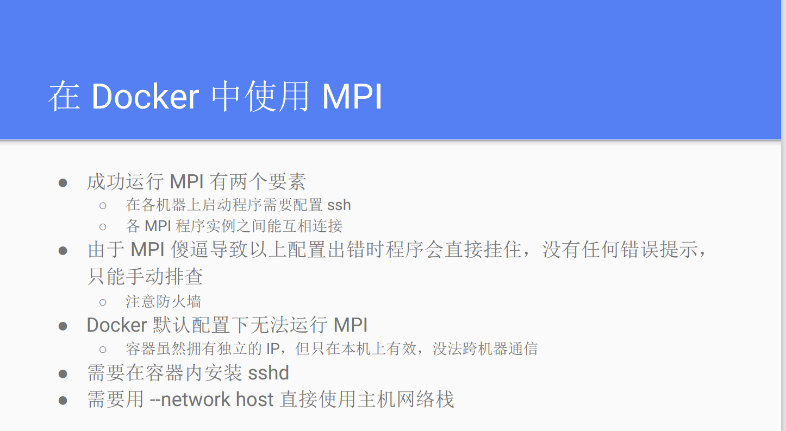

Docker Notes¶
Install on Debian12¶
参照官网教程
# Add Docker's official GPG key:
sudo apt-get update
sudo apt-get install ca-certificates curl
sudo install -m 0755 -d /etc/apt/keyrings
sudo curl -fsSL https://download.docker.com/linux/debian/gpg -o /etc/apt/keyrings/docker.asc
sudo chmod a+r /etc/apt/keyrings/docker.asc
# Add the repository to Apt sources:
echo \
"deb [arch=$(dpkg --print-architecture) signed-by=/etc/apt/keyrings/docker.asc] https://download.docker.com/linux/debian \
$(. /etc/os-release && echo "$VERSION_CODENAME") stable" | \
sudo tee /etc/apt/sources.list.d/docker.list > /dev/null
sudo apt-get update
sudo apt-get install docker-ce docker-ce-cli containerd.io docker-buildx-plugin docker-compose-plugin
Docker基本命令¶
1. 容器使用¶
退出容器快捷键¶
基本命令¶
docker ps -a #查看所有容器
docker container ls #查看所有正在运行中的容器
docker start CONTAINER_ID/NAME #启动一个已停止的容器
docker stop CONTAINER_ID/NAME #停止容器
docker restart CONTAINER_ID/NAME #重启容器
docker rm -f CONTAINER_ID/NAME #删除容器
docker exec -it CONTAINER_ID/NAME /bin/bash #进入容器
docker attach CONTAINER_ID/NAME #进入容器, 不推荐使用，因为退出容器终端后会导致容器的停止
docker export CONTAINER_ID/NAME > ubuntu.tar #导出容器到asc.tar
cat docker/ubuntu.tar | docker import - test/ubuntu:v1 #导入容器
docker import http://example.com/exampleimage.tgz example/imagerepo:v1 #从指定URL或目录导入容器
docker port CONTAINER_ID/NAME port #查看容器内某个端口映射情况
新建容器¶
运行示例：
docker run -v ~/hpc:/workspace/hpc --name hpc_2310 -itd --gpus all --privileged --shm-size=4g nvcr.io/nvidia/hpc-benchmarks:23.10
2. 镜像使用¶
获取镜像¶
docker pull pytorch/latest
docker pull -a #下载一个仓库中所有镜像 tag
docker pull --disable-content-trust true #禁用镜像验证
docker pull --platform=linux/arm64 #设置镜像所属平台
/etc/docker/daemon.json如下：
#添加镜像源
sudo vim /etc/docker/daemon.json
{
"registry-mirrors" : [
"https://registry.docker-cn.com",
"http://hub-mirror.c.163.com",
"https://docker.mirrors.ustc.edu.cn",
"https://cr.console.aliyun.com",
"https://mirror.ccs.tencentyun.com"
]
}
#重启Docker服务
$ sudo systemctl daemon-reload
$ sudo systemctl restart docker
基本命令¶
docker images #查看所有镜像
docker image ls keyword #列出和关键词相关的镜像
docker rmi imgae_name #删除镜像
docker commit -m="New Version" -a="Squarehuang" CONTAINER_ID/NAME asc24:v1 #从容器导出镜像
docker diff CONTAINER_ID/NAME #查看容器存储层的改动
docker tag ubuntu:18.04 username/ubuntu:18.04:dev #给镜像打标签
docker save alpine | gzip > alpine-latest.tar.gz #保存镜像并用gzip亚索
docker load -i alpine-latest.tar.gz #加载镜像
DockerHub使用¶
3. Docker容器互联¶
Docker四种网络类型¶
- bridge: 默认网络，容器默认使用的网络, 这个网络类型为容器提供了隔离的网络环境。
- 每个容器都会分配一个虚拟的以太网接口，并连接到 Docker 的默认桥接网络（通常是 docker0）
- 容器之间可以通过 IP 地址互相通信
- 容器可以通过 NAT（网络地址转换）访问外部网络
- 容器与宿主机可以通过端口映射（port mapping）进行通信
- host: 容器共享主机的网络，使用 host 网络的容器将不会获得自己的 IP 地址，而是使用宿主机的 IP 地址。
- 网络性能更高
- 容器端口和宿主机端口是相同的, 共享相同的网络栈
- none: 为容器提供一个完全隔离的网络环境。容器将不会连接到任何网络，也不会分配任何网络接口。
- 只有一个回环接口lo
- container:container_name : 使一个容器共享另一个容器的网络命名空间。使用这种网络模式的容器将与指定的容器共享 IP 地址和网络接口。
- 两个容器共享相同的网络栈，拥有相同的 IP 地址。
查看容器网络¶
新建Docker网络并连接¶
- -d: 指定Docker网络类型，bridge/overlay
- 可以给多个container创建一个Bridge，让它们能够互联
- 配置容器dns: 需要修改/etc/docker/daemon.json
Docker打包指南¶
基本命令¶
构建名称为image_name的镜像，.指定的是Context的路径，包括本地文件和Dockerfile，-f参数指的是Dockerfile的名称, 应该存在上下文路径中, --no-cache告诉Docker不要使用缓存来构建镜像
docker build -t image_name . -f Dockerfile_specific .
docker build -t hello-world https://github.com/docker-library/hello-world.git#master:amd64/hello-world #从Git repo构建镜像，指定分支是master，构建目录是amd64/hello-world
docker build - < context.tar.gz #从上下文压缩包中进行构建
docker commit -m="New Version" -a="Squarehuang" CONTAINER_ID/NAME asc24:v1 #从容器导出镜像
docker history CONTAINER_ID/NAME #查看镜像提交历史
docker diff CONTAINER_ID/NAME #查看容器存储层的改动
Dockerfile编写指南¶
Dockerfile官方文档
每一个Docker的构建都需要编写一个Dockerfile，Dockerfile编写要点参考如下：
+ FROM: FROM从某个镜像开始构建，也可以是scratch，代表不需要从任何已有镜像构建
RUN: RUN命令执行一次就是一层，所以尽量将多个命令合并成一个命令，减少镜像层数。并且在执行后，要对当前层引入的无关文件进行清空，例如apt缓存文件，任何在在下一层无关的东西都应该在当前层执行最后清理掉。
RUN echo '<h1>Hello, Docker!</h1>' > /usr/share/nginx/html/index.html
RUN ["/bin/sh", "-c", "echo '<h1>Hello, Docker!</h1>' > /usr/share/nginx/html/index.html"]
COPY: 将上下文目录中源路径的文件/目录复制到目标路径中，会保留源文件的各种元数据。
COPY [--chown=<user>:<group>] <源路径>... <目标路径>
COPY [--chown=<user>:<group>] ["<源路径1>",... "<目标路径>"]
COPY --from=nginx:latest /etc/nginx/nginx.conf /nginx.conf # COPY也可以从某个镜像中复制文件
CMD: 用于指定容器主进程的启动命令
CMD <command> <param1> <param2> #Shell格式默认用sh -c进行执行，所以参数都会交给Shell解析
CMD ["Executable","Param1","Param2"]
CMD <param1> <param2> # 指定EntryPoint后
ENTRYPOINT: 用于指定容器启动时执行的命令，可以通过docker run --entrypoint覆盖，会将CMD的内容作为参数传递给ENTRYPOINT指令，实际执行时变成
+ ENV: 设置环境变量
+ ARG: 设置环境变量，但是ARG设置的环境变量在将来容器运行时是不存在的。docker build --build-arg=
# Dockerfile
# 只在 FROM 中生效
ARG DOCKER_USERNAME=library
FROM ${DOCKER_USERNAME}/alpine
# 要想在 FROM 之后使用，必须再次指定
ARG DOCKER_USERNAME=library
RUN set -x ; echo ${DOCKER_USERNAME}
VOLUME: 定义匿名卷，避免向容器存储层中写入大量数据，任何向VOLUME中写入的信息都不会记录进容器存储层
+ EXPOSE: 声明容器运行时提供服务的端口，但并没有实际映射
+ WORKDIR: 更改之后的RUN、CMD、ENTRYPOINT、COPY和ADD指令的工作目录。如果是相对路径，则与上一个WORKDIR相关。
+ USER: 更改RUN、CMD、ENTRYPOINT、COPY和ADD指令的执行用户。用户必须事先建立好。root用户执行的脚本，若希望更换身份，建议使用gosu
# Dockerfile
# 建立 redis 用户，并使用 gosu 换另一个用户执行命令
RUN groupadd -r redis && useradd -r -g redis redis
# 下载 gosu
RUN wget -O /usr/local/bin/gosu "https://github.com/tianon/gosu/releases/download/1.12/gosu-amd64" \
&& chmod +x /usr/local/bin/gosu \
&& gosu nobody true
# 设置 CMD，并以另外的用户执行
CMD [ "exec", "gosu", "redis", "redis-server" ]
HEALTHCHECK: 通过该指令指定一行命令，用这行命令来判断容器主进程的服务状态是否还正常，从而比较真实的反应容器实际状态。
和CMD,ENTRYPOINT一样，HEALTHCHECK也是只能有一个，如果有多个，只有最后一个生效。
# Dockerfile
FROM nginx
RUN apt-get update && apt-get install -y curl && rm -rf /var/lib/apt/lists/*
HEALTHCHECK --interval=5s --timeout=3s --retries=3 \
CMD curl -fs http://localhost/ || exit 1
# 查看健康检查命令的输出
docker inspect --format '{{json .State.Health}}' CONTAINER_NAME/ID | python -m json.tool
ONBUILD: 该命令后的Docker指令只会在以当前镜像为基础镜像，去构建下一级镜像的时候才会执行
+ SHELL: 该命令指定了RUN、CMD、ENTRYPOINT的默认shell
Docker多阶段构建¶
as: 使用as来为某一阶段命名，当只想构建builder阶段的镜像时，可以增加--target=builder参数
COPY --from=0 /go/src/github.com/go/helloworld/app .: 从上一阶段的镜像中复制文件
FROM golang:alpine as builder
RUN apk --no-cache add git
WORKDIR /go/src/github.com/go/helloworld/
RUN go get -d -v github.com/go-sql-driver/mysql
COPY app.go .
RUN CGO_ENABLED=0 GOOS=linux go build -a -installsuffix cgo -o app .
FROM alpine:latest as prod
RUN apk --no-cache add ca-certificates
WORKDIR /root/
COPY --from=0 /go/src/github.com/go/helloworld/app .
CMD ["./app"]
Docker内使用MPI¶
......还没实践过 
{kind=link}
Docker Compose实践¶
Compose项目是Docker官方的开源项目，负责实现对Docker容器集群的快速编排，即「定义和运行多个 Docker 容器的应用」。
Compose中有两个关键概念：
- 服务 (service)：一个应用的容器，实际上可以包括若干运行相同镜像的容器实例。
- 项目 (project)：由一组关联的应用容器组成的一个完整业务单元，在 docker-compose.yml 文件中定义。
docker-compose.yml：Compose使用的主模板文件
基本命令¶
- -f, --file FILE 指定使用的 Compose 模板文件，默认为 docker-compose.yml，可以多次指定。
- -p, --project-name NAME 指定项目名称，默认将使用所在目录名称作为项目名。
- --verbose 输出更多调试信息。
- -v, --version 打印版本并退出。
docker compose build #重新构建项目中的服务容器
--force-rm #删除构建过程中的临时容器
--no-cache #构建镜像过程中不使用 cache
--pull #始终尝试通过 pull 来获取更新版本的镜像。
docker compose config #验证 Compose 文件格式是否正确
docker compose down #停止up命令的启动容器，并移除网络
docker compose images #列出Compose文件中的包含的所有镜像
docker compose kill -s SIGKILL/SIGINT/SIGTERM #停止服务容器
docker compose logs #查看容器输出，不同容器颜色不一样
docker logs -f -t --tail 10 CONTAINER_ID/NAME #实时查看容器输出，带时间戳，后十行
docker compose port [options] SERVICE PRIVATE_PORT
--index=index #指定多个容器中所要打印的容器序号，默认为1
docker compose ps
-q #只打印ID信息
docker-compose restart #重启项目中的服务
docker-compose rm #删除所有服务容器
docker-compose up -d #后台启动并运行所有的容器
docker-compose.yml编写指南¶
每个服务都必须通过 image 指令指定镜像或 build 指令（需要 Dockerfile）等来自动构建生成镜像。
# docker-compose.yml(image)
services:
webapp:
image: examples/web
ports:
- "80:80"
volumes:
- "/data"
# docker-compose.yml(build)
services:
webapp:
build:
context: ./dir
dockerfile: Dockerfile-build
args:
buildno: 1
entrypoint: /code/entrypoint.sh
user: nginx
working_dir: /code
domainname: example.com
hostname: test
mac_address: 02:42:ac:11:00:02
privileged: true
restart: always
read_only: true
tty: true
cache_from:
- alpine:latest
- corp/web_app:3.14
cap_add:
- ALL
commands: echo "hello world"
container_name: docker-web-container(default: 项目名称_服务名称_序号)
depends_on:
- db
- redis
dns:
- 8.8.8.8
dns_search:
- domain1.example.com
tmpfs:
- /run
env_file:
- ./common.env
environment:
- DEV_ENV=development
expose:
- "3000"
extra_hosts:
- "dockerhub:52.1.157.61"
healthcheck:
test: ["CMD", "curl", "-f", "http://localhost"]
interval: 1m30s
timeout: 10s
retries: 3
labels:
com.startupteam.release: "rc3 for v1.0"
network_mode: "bridge"
networks:
- some-network
ports:
- "3000"
- "8000:8000"
volumes:
- mysql_data:/var/lib/mysql
secrets:
- db_root_password
db:
image: "mongo:${MONGO_VERSION}"
redis:
image: redis
secrets:
file: ./my_secrets.txt
domainname, entrypoint, hostname, ipc, mac_address, privileged, read_only, shm_size, restart, stdin_open, tty, user, working_dir，基本和docker run中对应参数功能一致
Docker Swarm¶
一个用于管理多个装有Docker的机器的集群的软件，未完待续......